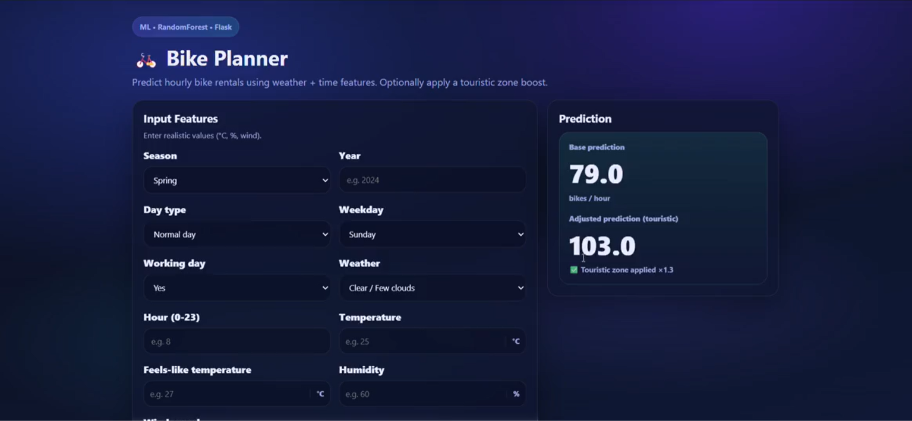

Bicycle Demand Forecasting
Built for the MindShift 2.0 Hackathon: from understanding rental data to choosing a model that predicts hourly demand.
View project on GitHubThe Bike Planner application.
Enter time and weather conditions to estimate hourly bicycle rentals. The interface shown here uses Random Forest and Flask, with an optional adjustment for a touristic zone.

From data to a model.
We studied the dataset, prepared the inputs and compared regression models to reduce the gap between predicted and observed rental demand.
Understand the data
We explored the rental dataset and the relationships between demand, time and weather. This analysis helped us understand the target variable and identify useful inputs for prediction.
Prepare the inputs
We preprocessed the data and worked on feature engineering to turn the available variables into model-ready inputs. This preparation connected the initial data analysis to model training.
Train and compare
We trained and evaluated regression models, using a loss function to measure the difference between predicted and actual rental counts. The goal was to reduce prediction error.
Select for generalization
We compared validation performance to guide model selection, looking for low loss on unseen data as well as a good fit during training. The selected model then powered rental predictions in the application.